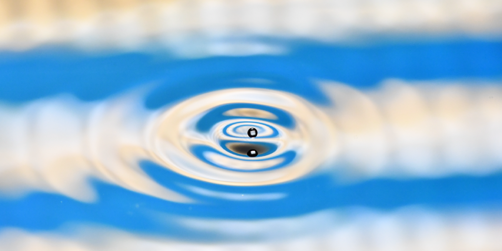
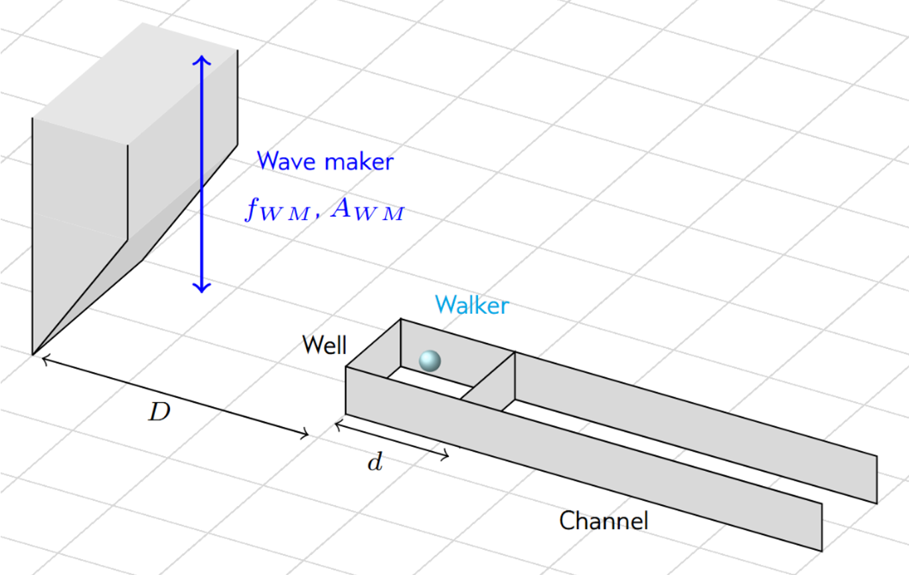
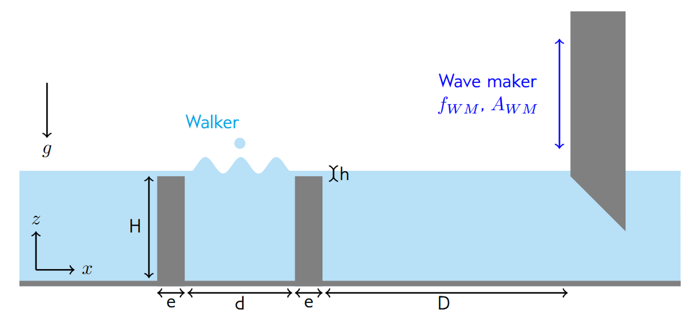
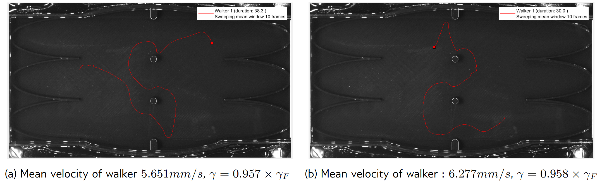

Writing

You are a Witch
During school, I worked on a writing and research project about the figure of the witch
and her place in society and culture. This dossier explores my personnal link with viewing women and myself as a witch.
Read the full PDF
here.
Projects
- Quantum Hydrolics Analogs – Research internship at John Bush lab MIT, 2025
When a small drop of oil is put on a vertically vibrating bath of the same liquid,
it can bounce indefinitely if the bath acceleration vibration is right bellow the Faraday threshold.
Moreover, this particle can self-propel on the surface of the bath through a resonant interaction with
its own wave field. This phenomenon in which a drop walks on a vibrating oil bath leaving waves when it
lands on it can be used to make an analogy with quantum particles and is called a hydrodynamic quantum analog (HQA),
based on de Broglie's pilot wave theory. - Swimming droplets - Part Time Internship, Gulliver Lab, 2025 At the Gulliver laboratory, a physico-chemical system has been developed allowing the observation of spontaneous motion of water droplets self-propelling in an oil phase (squalane) loaded with reverse micelles (monoolein). This water-in-oil emulsion exhibits unusual behavior: spontaneous motion is observed.
- Fog net - Student project, 2024
This project focused on fog nets, involving the design and construction of a fog machine, along with experimental measurements and numerical simulations.
Poster in french here




Currently, the aim is to make these droplets swim in a well-controlled chemical gradient in order to quantify the effect of a concentration gradient on the reorganization of interfacial stresses and therefore on the external control of the swimming direction of the droplets.
The objectives of my internship were therefore to design a microfluidic device capable of creating a micelle gradient transverse to the main swimming direction of the droplets, and then to observe the influence of the gradient strength on the swimming of the droplets. The purpose of these experiments were to try to discriminate the swimming mechanism at play with the swimming droplets.